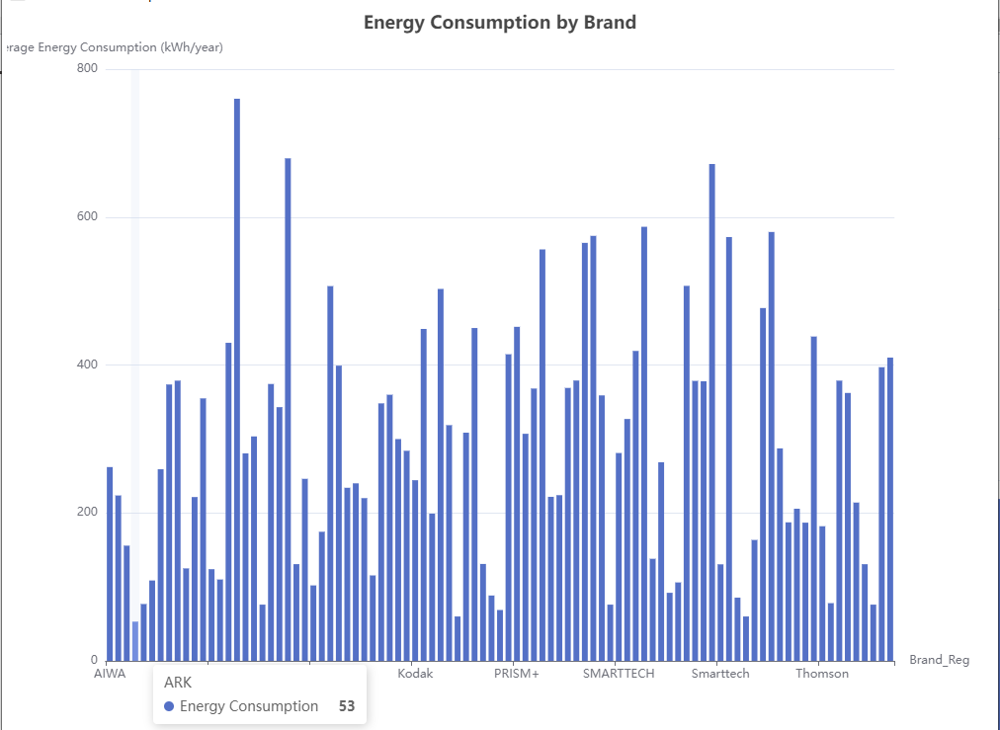
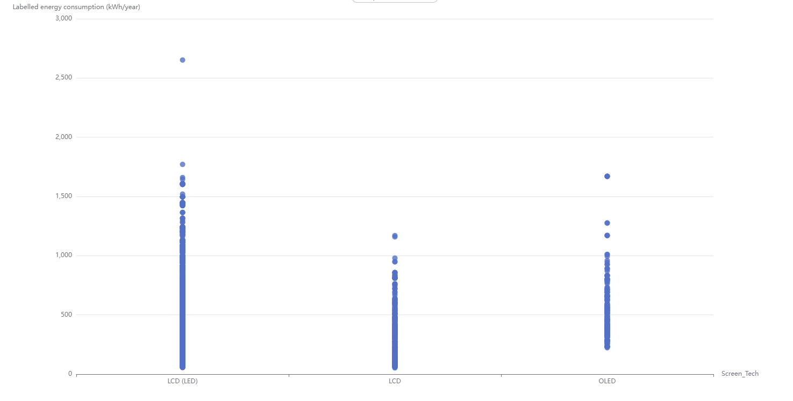
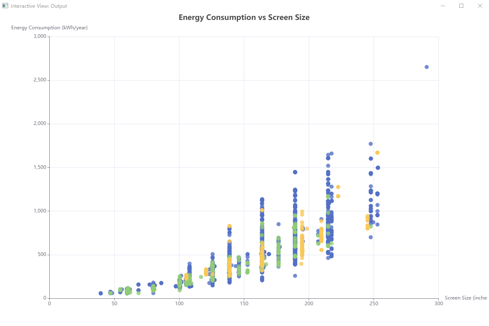

Energy Consumption of Televisions
Learn about the energy consumption of different television models in the Australian market.
Brand Energy Efficiency Comparison
This bar chart shows the annual energy consumption of different TV brands. It helps identify the brands with the most energy-efficient models.
Screen Technology Comparison
This scatter plot compares the energy efficiency of different screen technologies used in TVs.
Screen Size vs Energy Consumption
See the relationship between screen size and energy consumption in the chart below.
